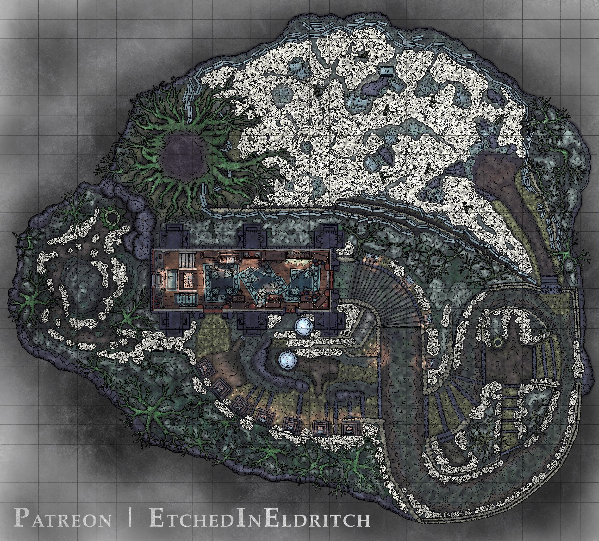
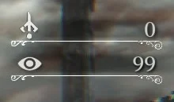

Getting to know Bloodborne
Developed by FromSoftware, a japanese studio which consolidated their space with games like Demon's Souls and Dark Souls, Bloodborne is a PS4 exclusive released in 2015. As a foreigner visiting the city of Yharnam in search of medical treatment, your character signs a contract to become a hunter, a position in and of itself rather mysterious at first: the implications of it will gradually be unfolded to those paying particular attention to detail, be it the scenery, the item descriptions, item placement or the cutscenes.
Apart from great atmosphere, initially based in gothic and vitorian aesthetics, both enemies and NPCS increment things with a pinch of horror and grotesque, deriving either from blood-spattered attacks or from movement and sole design. Right after editing and finishing your customized character, the game does not misguide the player, for your firsy enemy in a lycan that can and possibly will kill you with mostlt three hits. However, the player is given three alternatives, of which two are more on the implicit side:
- Killing the monster;
- Fleeing the monster;
- Dying to the monster.
Most likely you are going to die in your first attempt, although escaping it is not as hard as it may seem; in case you are willing to kill the lycan, you have two choices: i) hitting it bare-handed, dealing near to none damage or; ii) performing a visceral attack by pressing R2 until a spark and sound go off, there is one big but though: you must do it while positioned behind the monster. Whatever your course of action might be, one thing is for sure: all paths lead to The Hunter's Dream.
The Hunter's Dream


Being the first area outside Yharnam, the Hunter's Dream is the hub of Bloodborne, where you can get your first weapon and gun - that is right: no shields allowed in the game. Once there go into the house to talk to a very important NPC: Gehrman, your guide throughout the whole game. While talking, he mentions the doll, a womanly figure currently laying on an slightly elevated grassy terrain, and who is available for interaction once you have enough insight, represented by the eye symbol.